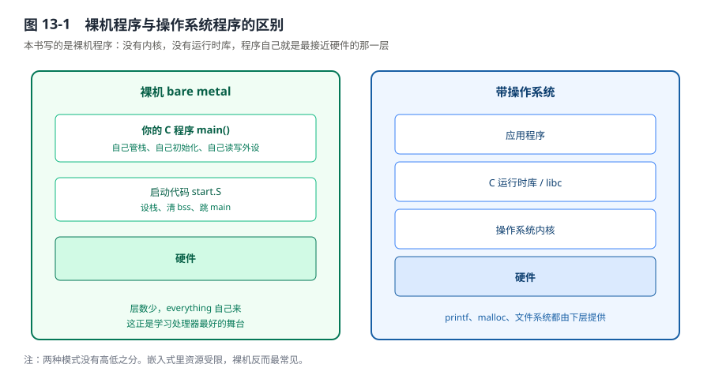
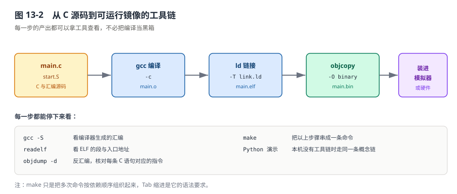
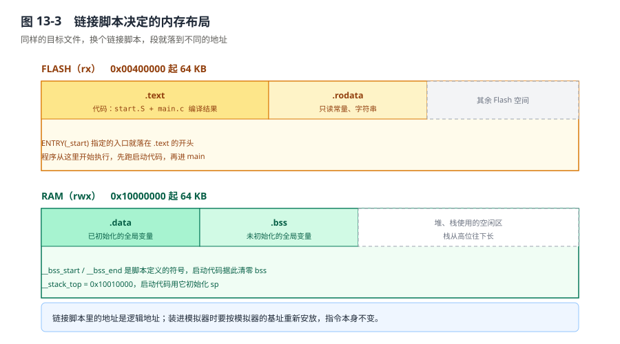
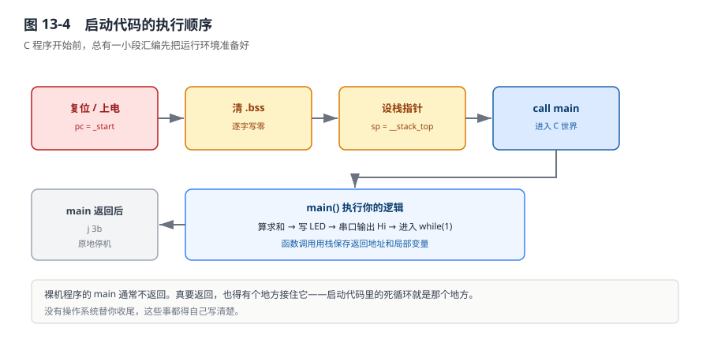
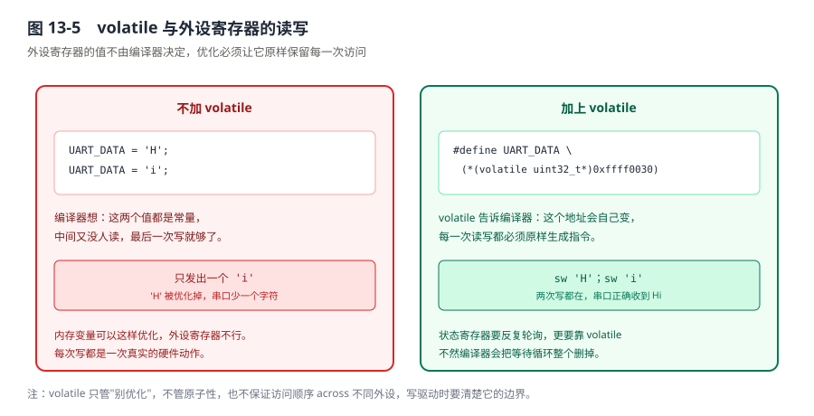
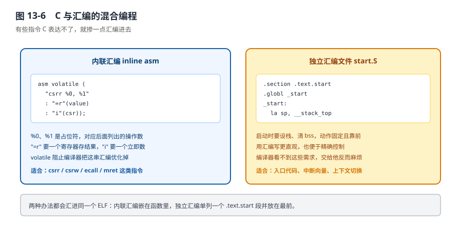

第 13 章 基于 C 的嵌入式系统编程
本章导读
前面十二章，软件侧写到 Python 模拟器，硬件侧搭到带异常和外设的单周期核。现在把这些线头收到一起：用 C 写一个真正的裸机程序，让它点亮一盏灯、从串口吐出两个字符。这是全书从”看懂处理器”走向”给处理器写程序”的最后一步。
写 C 程序不难，难的是弄明白从一行 C 到硬件动作之间发生了什么。编译器把 C 变成汇编，链接器把汇编变成带地址的 ELF，链接脚本决定每段代码放在哪里，启动代码把运行环境准备好，最后程序才跑起来。这一章就把这条链上的每一环拆开看一遍。
本书写作时用的机器没有安装 RISC-V GCC 和 QEMU，所以这一章给出两套东西。一套是完整的裸机 C 工程和 QEMU 示例，在装好工具链的机器上照着 Makefile 就能编译运行；另一套是本机的 Python 工具链演示，把编译、链接、生成镜像、运行的每一步都用看得见的代码重演一遍。两件事讲的是同一套道理，后者保证你在任何机器上都能把概念走通。
学完这一章，你应该能回答：裸机程序和操作系统程序有什么不一样；交叉编译器为什么叫”交叉”；链接脚本怎样决定代码和数据的地址；启动代码在 main 之前做了什么；volatile 为什么在外设驱动里少不了；C 里怎么嵌入几条汇编指令。
13.1 没有操作系统的程序
平时在电脑上写 C，程序能调用 printf 打印、用 malloc 申请内存、读写文件。这些能力不是 C 语言自带的，是操作系统和运行时库提供的。程序一启动，操作系统已经把内存、文件、屏幕都安排好了，main 只管做自己的事。
裸机程序没有这些靠山。处理器上电后从某个固定地址开始取指，此时内存是空的，栈指针没有值，全局变量还没准备好，更没有谁替你处理打印和内存分配。程序自己是运行在硬件上的第一层软件，环境要靠自己搭起来。图 13-1 把两种情形放在一起比较。

图 13-1 裸机程序与操作系统程序的区别
这不是说裸机更低级。嵌入式设备往往只有几十 KB 内存，跑不起操作系统，裸机反而最常见，也最直接。对我们来说更是如此：想看清一条 C 语句到底变成什么，就得把它放在没有遮挡的环境里。少一层抽象，就少一层猜测。
裸机程序要自己操心三件事。一是栈指针，函数调用要用栈保存返回地址和局部变量。二是未初始化的全局变量，也就是 .bss 段，要在 main 之前清零。三是入口，得告诉链接器程序从哪里开始执行。这三件事都由一小段汇编写成，叫启动代码。
13.2 从 C 到镜像的完整链条
先看清全局，再逐个击破。图 13-2 画的是一条典型的工具链。

图 13-2 从 C 源码到可运行镜像的工具链
main.c 和 start.S 交给交叉编译器，编译成目标文件 main.o。链接器读链接脚本 link.ld，把目标文件里的各个段安放到指定地址，产出 ELF 文件 main.elf。objcopy 从 ELF 里抽出纯机器码，得到 main.bin，这个镜像才能装进模拟器或烧进硬件。
链条上的每一步都能停下来查看，这正是学习的好机会。gcc -S 让你看编译器生成的汇编，readelf 让你看 ELF 的段和入口，objdump -d 把机器码反汇编回来。把这三样对着 C 源码看，编译就不再是黑箱。
make 只是把这些命令按依赖关系串起来。它看文件的时间戳：源码改了才重新编译，没改就跳过。Makefile 里命令必须用 Tab 缩进，这是它最容易被新手踩到的规矩。
13.3 交叉编译器
在一台 x86 电脑上，生成能在 RISC-V 处理器上运行的机器码，这件事叫交叉编译。生成代码的编译器叫交叉编译器，名字里的”交叉”就是指主机和目标机不是同一种架构。
本书用 riscv32-unknown-elf- 这一套工具。名字可以拆成三段：riscv32 是目标架构，unknown 是厂商字段，elf 表示输出 ELF 格式。Makefile 开头把工具前缀集中定义。
CROSS = riscv32-unknown-elf-
CC = $(CROSS)gcc
OBJDUMP = $(CROSS)objdump
OBJCOPY = $(CROSS)objcopy把前缀抽成一个变量，换工具链时只改一行。比如机器上装的是 riscv64-unknown-elf-，改 CROSS 就够了，下面的规则一个字不用动。
编译选项写在 CFLAGS 里，每一个都有讲究。
CFLAGS = -march=rv32i -mabi=ilp32 -nostdlib -O1 -g -Wall -T link.ld-march=rv32i 限定只生成基本整数指令。我们搭的硬件只会这些指令，编译器要是自作主张生成一条乘法或压缩指令，硬件就译不了。-mabi=ilp32 约定整数和指针都是 32 位。-nostdlib 告诉链接器不要链接标准库——裸机上没有 libc，也没有启动文件，一切都得自己来。-O1 开轻度优化，-g 保留调试信息，-Wall 打开常用警告。最后的 -T link.ld 指定链接脚本。
这里有个容易困惑的地方：既然 -nostdlib，为什么 C 里还能用 uint32_t 这样的类型？因为 stdint.h 只是头文件，里的类型定义是编译器自带的，不需要链接任何库。缺的是 printf、malloc 这些函数的实现。
13.4 链接脚本决定地址
编译得到的每个目标文件里，代码和数据是分段的：.text 放指令，.rodata 放只读常量，.data 放已初始化的全局变量，.bss 放未初始化的全局变量。这些段在目标文件里还没有确定的地址，链接器的工作就是给它们安排地址。安排的规则写在链接脚本里。
先声明两块内存。
MEMORY
{
FLASH (rx) : ORIGIN = 0x00400000, LENGTH = 64K
RAM (rwx) : ORIGIN = 0x10000000, LENGTH = 64K
}FLASH 只读可执行，起点 0x00400000，正好是第 8 章单周期核的复位入口。RAM 可读写可执行，起点 0x10000000，和本书的数据内存一致。括号里的 rx、rwx 是属性标记，链接器据此检查有没有把代码塞进只读区之类的问题。
接着把段分配进去。
.text :
{
*(.text.start)
*(.text*)
} > FLASH*(.text.start) 先放启动代码的段，*(.text*) 再放其余代码。顺序要紧：启动代码必须排在最前面，因为处理器复位后从 .text 的开头取指。> FLASH 表示这个段放进 FLASH 区。
.bss 段的写法稍微特别。
.bss (NOLOAD) :
{
__bss_start = .;
*(.bss*)
__bss_end = .;
} > RAM(NOLOAD) 告诉链接器，这个段在镜像文件里不占空间——未初始化的变量本来就不用保存初值。. 是当前地址计数器，__bss_start 和 __bss_end 是两个由脚本定义的符号，分别记录 bss 的起止地址。启动代码会用到它们。
最后定义栈顶。
__stack_top = ORIGIN(RAM) + LENGTH(RAM);栈从内存顶端往下长，所以栈顶设在 RAM 的末尾。这是个只存在于链接阶段的符号，不占任何存储空间，启动代码用 la 就能把它的值装进栈指针。
完整的布局画在图 13-3。

图 13-3 链接脚本决定的内存布局
链接脚本里的地址是逻辑地址。第 7 章的 Python 模拟器从 0x80000000 开始放程序，和这里的 0x00400000 不同。装进模拟器时要把镜像搬到模拟器的基址，指令本身不用改——这正是相对跳转的好处，代码不依赖自己被放在哪里。
13.5 启动代码在 main 之前做什么
入口点由链接脚本指定。
ENTRY(_start)_start 是启动代码的标签。处理器复位后跳到这里，此时还没进 C 世界。启动代码写在 start.S 里，第一件事是清 bss。
.section .text.start
.globl _start
_start:
/* 清 .bss：从 __bss_start 到 __bss_end 逐字写零 */
la t0, __bss_start
la t1, __bss_end
1:
bge t0, t1, 2f
sw zero, 0(t0)
addi t0, t0, 4
j 1b
2:这段是个循环。la 把链接脚本定义的两个符号地址装进 t0 和 t1。只要 t0 还没到 t1，就往 t0 指向的地方写一个零，再把 t0 加四。数字标签 1:、2: 是汇编的局部标号，1b 表示向后找最近的 1，2f 表示向前找最近的 2。同一个源文件里可以有很多个 1:，靠方向区分，写小段循环很方便。
为什么必须清零？C 语言规定未初始化的全局变量初值为零。这个规定不是编译器在运行时保证的，硬件上电后那片内存里是随机的。不清零，一个没赋初值的计数器可能从 314159 开始数。
第二件事是设栈，然后调用 main。
/* 设栈指针，然后调用 C 的 main */
la sp, __stack_top
call main
3:
/* main 若返回，停在这里 */
j 3bla sp, __stack_top 把栈顶地址装进栈指针。这一步必须在调用 main 之前，因为函数调用一进来就要用栈保存返回地址。call 是伪指令，汇编器会把它展开成 auipc 加 jalr，能够跳到任意 32 位地址。
main 通常不该返回。但 C 编译器不知道这一点，它照样会生成返回指令。万一 main 真返回了，控制流落到 3: 的死循环，处理器停在那里，不会跑到未知的内存里去乱执行。整个过程见图 13-4。

图 13-4 启动代码的执行顺序
启动代码通常用汇编写，不用 C。原因很实在：设栈指针、清零 bss 这些动作，C 编译器看不到需求，也没法保证生成的第一条指令是什么。交给汇编写，顺序和指令都控制在自己手里。
13.6 用 C 访问外设
现在写 C 程序。目标是用第 12 章的外设：把求和结果写到 LED，从串口输出 Hi。
先解决地址怎么表示。外设是内存映射的，一个寄存器就是一个地址，用指针访问最自然。头文件里集中定义这些指针。
/*
* 本书第 12 章定义的外设地址。每个寄存器都用一个指针常量表示，
* volatile 告诉编译器"这个地址的内容会自己变化，别优化掉读写"。
*/
#define MTIME_LO (*(volatile uint32_t *)0xffff0000u)
#define LED (*(volatile uint32_t *)0xffff0010u)
#define SWITCH (*(volatile uint32_t *)0xffff0020u)
#define UART_DATA (*(volatile uint32_t *)0xffff0030u)
#define UART_STAT (*(volatile uint32_t *)0xffff0034u)(*(volatile uint32_t *)0xffff0010u) 这句可以拆开读：0xffff0010u 是个地址，转成指向 uint32_t 的指针，再解引用，就得到这个地址上的一个 32 位对象。给它赋值相当于写这个寄存器，读它就相当于读寄存器。volatile 是关键，稍后细说。
串口发送要先看状态。16550 风格的状态寄存器里，bit 5 是 THRE，表示发送保持寄存器空，只有它置位才能写下一个字节。
#define UART_DR 0x01u /* 接收数据就绪 */
#define UART_THRE 0x20u /* 发送保持寄存器空 */这两个位是第 7 章 UART 模型里用过的，第 12 章的硬件也照此实现。
发送一个字符的函数就这么写。
/* 轮询状态位，直到发送保持寄存器变空 */
void uart_putc(char c)
{
while ((UART_STAT & UART_THRE) == 0) {
/* 等待 */
}
UART_DATA = (unsigned char)c;
}循环里什么也不做，只是反复读状态寄存器。处理器比串口快得多，这个等待是必要的。没有它，两个字符会被接连写进发送寄存器，前一个还没发出去就被覆盖。
主程序调用它，再加点计算。
int main(void)
{
int s = sum_to(10); /* 1+2+...+10 = 55 */
LED = (uint32_t)s; /* 低 8 位点亮，0x37 */
uart_putc('H');
uart_putc('i');
while (1) {
/* 停机 */
}
return 0;
}求和函数本身很普通。
/* 一个会被编译器翻译成循环和加法的小函数 */
int sum_to(int n)
{
int s = 0;
for (int i = 1; i <= n; ++i) {
s += i;
}
return s;
}值得留意的是它的参数传递。按 RISC-V 调用约定，第一个整数参数放 a0，返回值也放 a0。编译器会照这个约定生成代码，稍后在反汇编里能验证。
volatile 为什么不能省
假设把 UART_DATA 定义成普通的 uint32_t *。编译器看到连续两次赋值，中间没有读，就会想:既然都是写同一个地址，前一个值又没人用，那就只保留最后一次写。于是 'H' 被优化掉，串口只收到 'i'。对普通内存变量，这个优化完全正确；对外设寄存器，它改变了硬件行为。
状态寄存器的轮询更危险。编译器如果发现循环体里没有改变状态地址的写，可能判定条件永远不变，把整个等待循环优化掉。图 13-5 对比了加与不加 volatile 的差别。

图 13-5 volatile 与外设寄存器的读写
volatile 的含义是”这个对象可能被程序之外的因素改变，每次访问都要真的执行”。它保证每次读写都生成对应的访存指令，编译器不会合并、不会删掉、不会缓存到寄存器里。写驱动时，所有外设寄存器都该加它。
要说清楚它的边界。volatile 只管”别优化”，不管原子性，也不负责不同外设之间的访问顺序。真要做多核同步或内存映射设备的严格排序，还得用别的手段。本书的单核简化模型里，volatile 够用了。
13.7 C 与汇编混合
有两件事 C 语言做不了：读 CSR，执行 ecall。这些是特权指令，C 里没有对应的语法。办法是用内联汇编，直接在 C 函数里嵌几条汇编。
先看现成的写法。
/*
* CSR 读写和 ecall 没有对应的 C 语句，只能用内联汇编。
* "i"(csr) 要求把 CSR 编号当汇编立即数，"=r" 要求分配一个寄存器接结果。
*/
#define read_csr(csr) \
({ uint32_t value; \
__asm__ __volatile__("csrr %0, %1" : "=r"(value) : "i"(csr)); \
value; })__asm__ __volatile__ 里那串字符串是汇编模板，%0、%1 是占位符。冒号后面分三段：输出操作数、输入操作数、会被破坏的寄存器列表。这里 "=r"(value) 是输出，等号表示要写，字母 r 表示随便分配一个通用寄存器；"i"(csr) 是输入，字母 i 表示它是个汇编立即数。编译器把 %0 换成它给 value 分配的寄存器，把 %1 换成 CSR 编号。
__volatile__ 的作用和 C 里的 volatile 类似，阻止编译器把这串汇编当成可以重排或删除的东西。ecall 的封装更简单，没有操作数。
static inline void ecall(void)
{
__asm__ __volatile__("ecall");
}写 CSR 用另一个宏。
#define write_csr(csr, val) \
__asm__ __volatile__("csrw %0, %1" :: "i"(csr), "r"(val))两个冒号挨在一起，中间的输出段空着，表示这条汇编没有输出。输入段有两个：csr 当立即数，val 当寄存器里的值。
什么时候用内联汇编，什么时候用独立的 .S 文件？经验是这样：一条或几条指令嵌在函数中间，用内联汇编；整段逻辑相对独立、要求精确控制位置和顺序，比如启动代码和中断向量，用独立汇编文件。图 13-6 把两种办法放在一起。

图 13-6 C 与汇编的混合编程
内联汇编有个陷阱常被忽略：编译器不知道你写的汇编改了哪些寄存器，除非你在破坏列表里声明。本书只在启动和 CSR 访问这类简单场合用它，没有复杂的寄存器依赖，暂且绕开了这个问题。真正写底层驱动时，这一课迟早要补。
13.8 本机就能走通的工具链演示
真机上的流程清楚了。没有工具链的机器上，怎么把这条链走一遍？答案是用 Python 把每一步演出来。代码在 code/python/13_toolchain/，它复用第 7 章的模拟器，把编译器输出的汇编当作输入。
先把汇编变成机器码
第一章写过按字段拼指令的小函数，这里直接复用 encode.py。汇编器 assemble.py 做两遍扫描。第一遍收集标签和常量，算出每条指令的地址。
def assemble(source):
"""两遍汇编，返回 (words, labels)。labels 的值是相对偏移（字节）。"""
lines = clean(source)
labels, constants = {}, {}
pc = 0
# 第一遍：收集标签与常量，算出每条指令的地址
for _, line in lines:
while ":" in line:
name, line = line.split(":", 1)
labels[name.strip()] = pc
line = line.strip()
if not line:
break
if not line:
continue
op = line.split()[0].lower()
if op == ".equ":
parts = line.replace(",", " ").split()
constants[parts[1]] = number(parts[2])
continue
if op == ".word":
pc += 4
continue
pc += 4 * len(expand(line))为什么必须两遍？因为跳转指令要用到标签的地址，而标签可能写在后面。第一遍把标签都记下来，第二遍遇到 jal ra, sum_to 时才能算出该跳多远。这是汇编器的基本套路。
第二遍逐条生成机器码。
# 第二遍：生成机器码
words = []
pc = 0
for lineno, line in lines:
while ":" in line:
_, line = line.split(":", 1)
line = line.strip()
if not line:
break
if not line:
continue
op = line.split()[0].lower()
if op == ".equ":
continue
if op == ".word":
words.append(number(line.split()[1]) & 0xFFFFFFFF)
pc += 4
continue
for real_op, args in expand(line):
words.append(encode_one(real_op, args, pc, labels, constants)
& 0xFFFFFFFF)
pc += 4
return words, labelsexpand 处理伪指令。li、nop、j、call、ret 这些写法并非机器指令，汇编器要把它们展开成真实的 RV32I 指令。
def expand(line):
"""把伪指令展开成一条或两条真实指令，返回助记符列表。"""
parts = line.replace(",", " ").split()
op = parts[0].lower()
args = parts[1:]
if op == "nop":
return [("addi", ["zero", "zero", "0"])]
if op == "mv":
return [("addi", [args[0], args[1], "0"])]
if op == "li":
imm = number(args[1])
if -2048 <= imm <= 2047:
return [("addi", [args[0], "zero", str(imm)])]
return [("lui", [args[0], str((imm + 0x800) >> 12)]),
("addi", [args[0], args[0], str(imm & 0xFFF)])]
if op == "j":
return [("jal", ["zero", args[0]])]
if op == "call":
return [("jal", ["ra", args[0]])]
if op == "ret":
return [("jalr", ["zero", "ra", "0"])]
if op == "ble":
return [("bge", [args[1], args[0], args[2]])]
if op == "bgt":
return [("blt", [args[1], args[0], args[2]])]
return [(op, args)]li 是个好例子。立即数装得进 12 位，一条 addi 就够；装不进，就拆成 lui 加 addi 两条。第 11 章踩过 addi 装不下 2048 的坑，这里正好看见汇编器是怎么替我们处理的。
编译器输出长什么样
program.s 是 main.c 的等价物。真机上它由 GCC 生成，这里手写出来，方便对照。先看主程序部分。
lui sp, 0x8000f # 栈指针 = 0x8000f000，指向主存顶部
addi a0, zero, 10 # 调用 sum_to(10)
jal ra, sum_to
add s0, a0, zero # s = 返回值 55
lui a1, 0xffff0 # a1 = 0xffff0000，外设基址
sw s0, 0x10(a1) # LED = 55
addi t2, zero, 72 # 'H' = 0x48
sw t2, 0x30(a1) # UART_DATA = 'H'
addi t2, zero, 105 # 'i' = 0x69
sw t2, 0x30(a1) # UART_DATA = 'i'
stop: jal zero, stop # 停机自环对照 C 源码看：sum_to(10) 变成把 10 放进 a0 再 jal；LED = s 变成一条 sw；两个 uart_putc 因为状态寄存器恒为可发送，被简化成两次写数据寄存器。参数在 a0、返回值在 a0，和调用约定完全对上。
求和函数用栈保存现场，这是函数调用的标准动作。
# int sum_to(int n) 入口参数在 a0，返回值放 a0
sum_to:
addi sp, sp, -8 # 让出一个栈槽
sw ra, 4(sp) # 保存返回地址
sw s0, 0(sp) # 保存 s0
addi s0, zero, 0 # s = 0
addi t0, zero, 1 # i = 1
addi t1, zero, 10 # 上界 10
loop: blt t1, t0, done # 若 i > 10 则退出
add s0, s0, t0 # s += i
addi t0, t0, 1 # i++
jal zero, loop
done: add a0, s0, zero # 返回值 = s
lw s0, 0(sp) # 恢复现场
lw ra, 4(sp)
addi sp, sp, 8
jalr zero, ra, 0 # 返回 mains0 是被调用者保存寄存器，函数用了它就得先存后恢复，否则调用者手里的值会被破坏。ra 是返回地址，也必须保存，因为函数里还有 jal 跳转，会覆盖 ra。这两条规矩合起来，就是 RISC-V 调用约定的核心。
生成镜像并运行
build_image.py 把上面几步串起来。它先汇编，报告段布局。
def report_sections(words, labels):
text_size = 4 * len(words)
print("ELF 段布局（逻辑地址，来自 link.ld）")
print(" 段 起始地址 大小 属性")
print(" .text 0x%08x %5d B rx" % (FLASH_ORIGIN, text_size))
print(" .rodata 0x%08x %5d B r" % (FLASH_ORIGIN + text_size, 0))
print(" .data 0x%08x %5d B rwx" % (RAM_ORIGIN, 0))
print(" .bss 0x%08x %5d B rwx" % (RAM_ORIGIN, 0))
print(" 栈底 0x%08x" % STACK_TOP)
print("入口 _start（本演示的 main）: 0x%08x" % FLASH_ORIGIN)
print("符号表: " + ", ".join("%s=0x%x" % (k, v)
for k, v in sorted(labels.items())))
print()这段对应真机上 readelf 做的事：告诉你每个段放在哪里、多大。逻辑地址来自链接脚本，符号表来自汇编器收集到的标签。
装进模拟器时要重定位。
def load_image(bus, words):
"""把逻辑地址 0x00400000 的镜像搬到模拟器基址 BASE。"""
for i, word in enumerate(words):
bus.store32(BASE + 4 * i, word)真机上镜像烧进 0x00400000，模拟器里搬到 0x80000000。指令里的跳转都是相对偏移，搬一下照样能跑。
运行部分就是第 7 章的老套路：取指、译码、执行、打印变化的寄存器。
def run_image(words, trace=True, max_steps=500):
bus = DemoBus()
load_image(bus, words)
cpu = CPU(bus, entry=BASE)
steps = 0
while steps < max_steps:
pc = cpu.get_pc()
word = cpu.fetch()
before = list(cpu.regs)
running = execute(cpu, decode(word), bus)
steps += 1
if trace:
changed = ["x%d=0x%08x" % (i, cpu.regs[i])
for i in range(1, 32) if before[i] != cpu.regs[i]]
print("pc=0x%08x %-22s %s"
% (pc, disasm(word), " ".join(changed)))
if not running:
break
return cpu, bus, stepsDemoBus 把第 12 章的外设地址接进模拟器，往 0xffff0030 写字节会记进 uart_tx，往 0xffff0010 写会更新 led。于是程序跑完后，我们能像看硬件寄存器一样检查这两个值。
跑一遍看结果
在本机执行：
cd code/python/13_toolchain
python build_image.py
python test_toolchain.py第一段输出先报告段布局，再逐条打印反汇编和寄存器变化，最后给出三样检查结果。
执行 500 步后:
sum_to(10) -> x10(a0) = 55
LED = 0x37
UART 输出 = 'Hi'
结果: PASS求和得到 55，LED 是 0x37（正是 55），串口收到 Hi。程序末尾是停机自环，所以会一直跑到步数上限，这是预期行为。自检脚本把这条也查了一遍：PC 应当停在 stop 那条指令上。
自检脚本 test_toolchain.py 还查了别的东西：编码函数算得对不对，伪指令展开对不对，标签地址对不对，以及整条链跑下来的结果对不对。12 项检查全部通过。
PASS 求和结果 55
PASS LED = 0x37
PASS 串口输出 Hi
PASS PC 停在停机自环
ALL TOOLCHAIN TESTS PASSED这套演示没有用真正的 GCC，program.s 是手写的。它演示的是工具链每一步的作用和数据流：汇编怎么变成机器码，链接怎么决定地址，镜像怎么装进内存，程序怎么跑起来。理解了这些，再看真机上的 gcc、ld、objdump，就知道它们各自在替你做哪件事。
13.9 在 QEMU 里跑
QEMU 能在一台电脑上模拟 RISC-V 机器。本书用它做软件侧的系统演示，不拿它替代我们自己搭的处理器。
QEMU 的 virt 机器串口在 0x10000000，和本书的 0xffff0030 不同。所以另做了一个最小示例 code/qemu/hello/，只做一件事：打印一行字。
#include <stdint.h>
/* QEMU virt 机器的 16550 UART 数据寄存器 */
#define UART0 ((volatile uint32_t *)0x10000000u)
void main(void)
{
const char *s = "Hello from RISC-V\n";
while (*s) {
*UART0 = (uint32_t)(unsigned char)*s;
s++;
}
for (;;) {
}
}链接脚本把程序放在 0x80000000，这是 QEMU virt 机器的内存起点。
SECTIONS
{
. = 0x80000000;
.text :
{
*(.text*)
}编译运行就两条命令。
make
make run终端应当打印 Hello from RISC-V。程序最后进死循环，QEMU 不会自己退出，按 Ctrl+A 再按 X 退出。
本机没有装 QEMU 和交叉编译器，这组脚本未在机器上实跑。正文给出的是标准用法和预期现象，在装好工具的机器上照做即可。核心实验用 Python 演示或第 12 章的 Verilog 仿真就能在本机完成，不依赖这些工具。
13.10 重点与权衡
这一章的东西头绪多，理一理哪些是要害。
工具链是一串确定的变换。 C 变汇编，汇编变目标文件，链接变 ELF，抽镜像，装内存。每一步的产出都能用工具查看。把黑箱拆开，概念就落地了。
地址是链接器安排的。 同一个目标文件，换个链接脚本就落到不同地址。入口点、段顺序、栈顶都由脚本决定。理解这一点，才明白为什么裸机程序要操心根本不存在于PC程序里的地址问题。
启动代码补上 C 不管的事。 栈指针、bss 清零、入口，这些必须在 main 之前准备好。C 编译器帮不上忙，只能用汇编写。
volatile 划出编译优化的边界。 外设寄存器会被硬件改变，每次访问都得真实执行。省掉它，程序在仿真里可能还”看起来对”，到真机上就出错。
内联汇编点到为止。 C 表达不了的特权指令用它补。操作数约束和破坏列表是它的难点，本书用到的场合都很简单，复杂的驱动开发需要另做功课。
也要说清取舍。手写汇编的演示可读性强，但不等于真实的编译器输出；真实的 GCC 会做大量优化，生成的指令序列比这里的示范复杂得多。QEMU 示例用虚拟串口，避开了本书自己的外设地址，换来的是一套能在普通电脑上跑的对照环境。两条路各有各的用途，不要混淆。
13.11 实验
实验一 走通本机工具链 进入 code/python/13_toolchain/，先跑 python test_toolchain.py 看 12 项检查，再跑 python build_image.py 看完整的段布局和逐条反汇编。把反汇编的每一行和 program.s 对上，确认自己看得懂。
实验二 改程序重跑 把 program.s 里的求和上界从 10 改成 100，把 sum_to 上界的 addi t1, zero, 10 改成 100。重跑，看求和结果和 LED 值变了没有。注意 LED 只显示低 8 位。
实验三 观察调用约定 在 program.s 的 sum_to 里再加用一个被保存寄存器（如 s1），练习保存和恢复。忘了会怎样？改完把 s1 加进保存列表前后各跑一次，对比 main 里 s1 的值。
实验四 看懂 volatile 在 code/c/13_baremetal/main.c 里，试着把 rv32i.h 中 UART_DATA 的 volatile 去掉。有工具链的话，对比 -O0 和 -O2 下的反汇编，看两次写串口有没有被合并成一次。
实验五 改链接脚本 把 code/c/13_baremetal/link.ld 里的 FLASH 起点改成另一个地址，重新编译，用 readelf -S 看段的地址怎么跟着变。体会”地址是链接器安排的”这句话。
实验六 QEMU 对照 在装好工具的机器上跑 code/qemu/hello/，确认输出。把字符串改长、改短，看串口输出的变化。这是全书唯一一次真正借外部工具运行程序。
香山一瞥（选读）
香山这样的高性能处理器，软件启动过程比本书的裸机程序长得多。上电后先由 ROM 里的固件（如 OpenSBI）跑起来，初始化时钟、内存控制器和串口，再把控制权交给上级软件。操作系统内核还要建立页表、设置中断向量、初始化调度器，才轮到第一个用户程序。
中间的软件栈越厚，一行 C 到硬件动作之间的距离就越远。但每一步的本质没变：还是编译、链接、装载，还是有人在最底层设好栈和入口。本书把这条链压缩到最短，正是为了让你看清那些在复杂系统里被层层遮住的基本动作。有兴趣的读者可以顺着 OpenSBI 的启动代码往下读，会发现它做的许多事，和本章的 start.S 是同一类，只是规模大得多。
小结
这一章从 C 源码出发，走过工具链的每一环，最后落到硬件上。
裸机程序没有操作系统撑腰，环境自己搭。交叉编译器在 x86 上生成 RISC-V 代码，选项 -march、-mabi、-nostdlib 各自约束着生成结果。链接脚本把代码和数据安排到指定地址，.text 进 Flash，.bss 进 RAM，栈顶在内存末端。启动代码在 main 之前设栈、清 bss、跳入口。外设寄存器用 volatile 指针访问，每次读写都不能被优化掉。C 里表达不了的特权指令，用内联汇编补上。
本机演示把这条链走了一遍：汇编成机器码，报告段布局，装进模拟器运行，检查 LED 和串口输出。求和得 55，LED 是 0x37，串口收到 Hi，12 项自检全部通过。QEMU 示例给出了在装好工具的机器上复现的办法。
从指令到汇编，从模拟器到硬件，从裸机到 C 程序，这条主线到这里就完整了。最后一章是综合实验，把这些环节串成一次完整的系统运行，并用定时器中断驱动一个最小的多任务切换。
思考题
- 裸机程序为什么必须在 main 之前设栈指针？如果跳过这一步，最先出问题的会是什么？
- 交叉编译的”交叉”体现在哪里？
-march=rv32i和-mabi=ilp32各约束了什么？ - 链接脚本里
.bss段为什么要加(NOLOAD)？__bss_start和__bss_end这两个符号是谁定义的，谁使用的？ - 汇编器为什么要用两遍扫描？如果只用一遍，哪类指令会出问题？
li伪指令在立即数装不下 12 位时为什么要拆成lui加addi两条？直接截断会怎样？- 函数
sum_to为什么要保存s0和ra？只保存其中一个够不够？ - 如果把
UART_DATA的volatile去掉，编译器可能对串口输出做什么优化？为什么这种优化对普通内存变量没问题？ - 内联汇编里
%0、%1是怎么和 C 变量对应起来的？"=r"和"i"两种约束有什么区别？